作業程序的法令依據
作業程序 一、依據
(一)警察職權行使法。
(二)道路交通管理處罰條例、違反道路交通管理事件統一裁罰基準及處理細則。
(三)中華民國刑法。
(四)刑事訴訟法。
(五)毒品危害防制條例及其施行細則、濫用藥物尿液檢驗作業準則。
(六)藥事法及管制藥品管理條例。
(七)行政罰法第二十六條。
取締疑似施用毒品後駕車作業程序｜中華民國115年5月13日警署刑毒緝字第1150006494號函頒定（修正）
內容含流程圖、作業內容、注意事項及附表一至附表三；可用兩指放大閱讀。
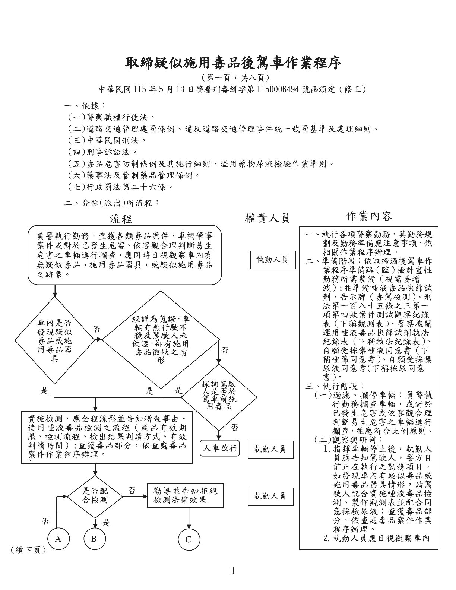
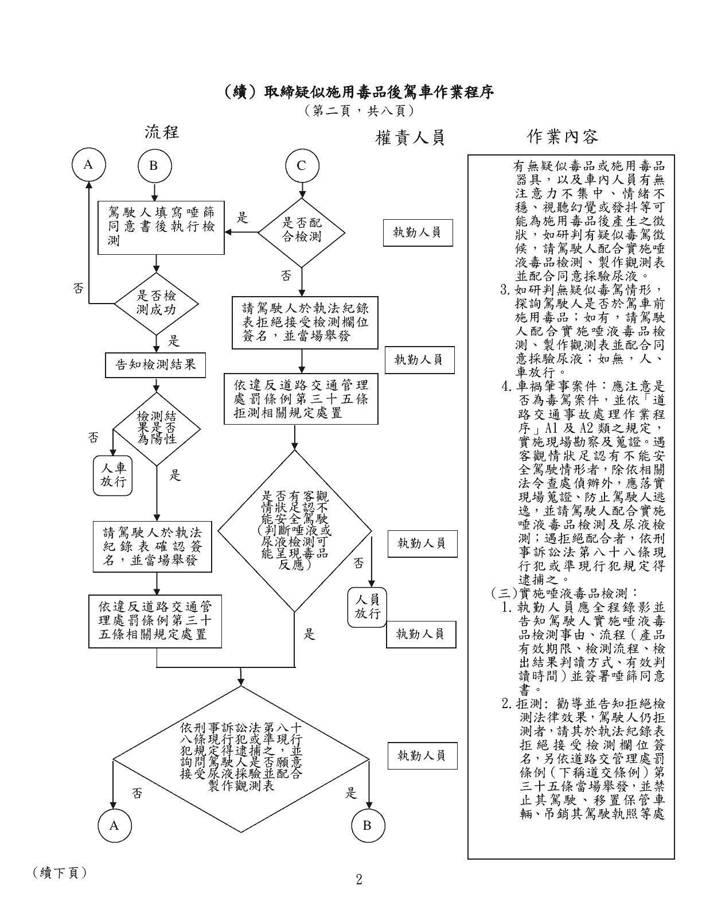
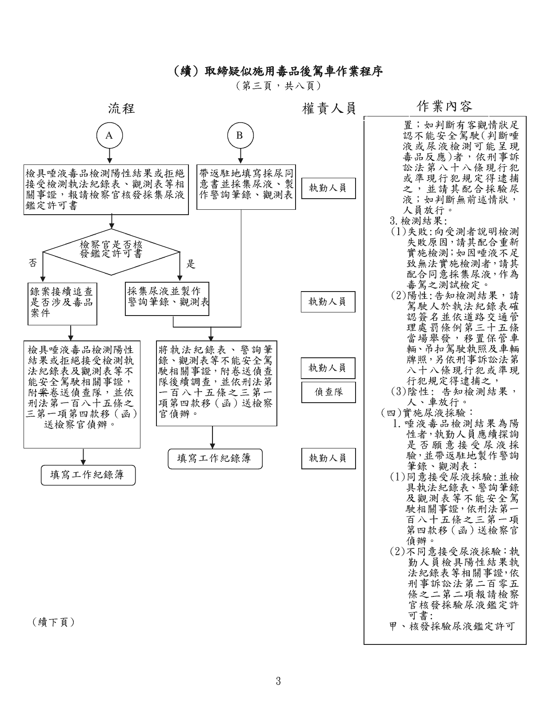
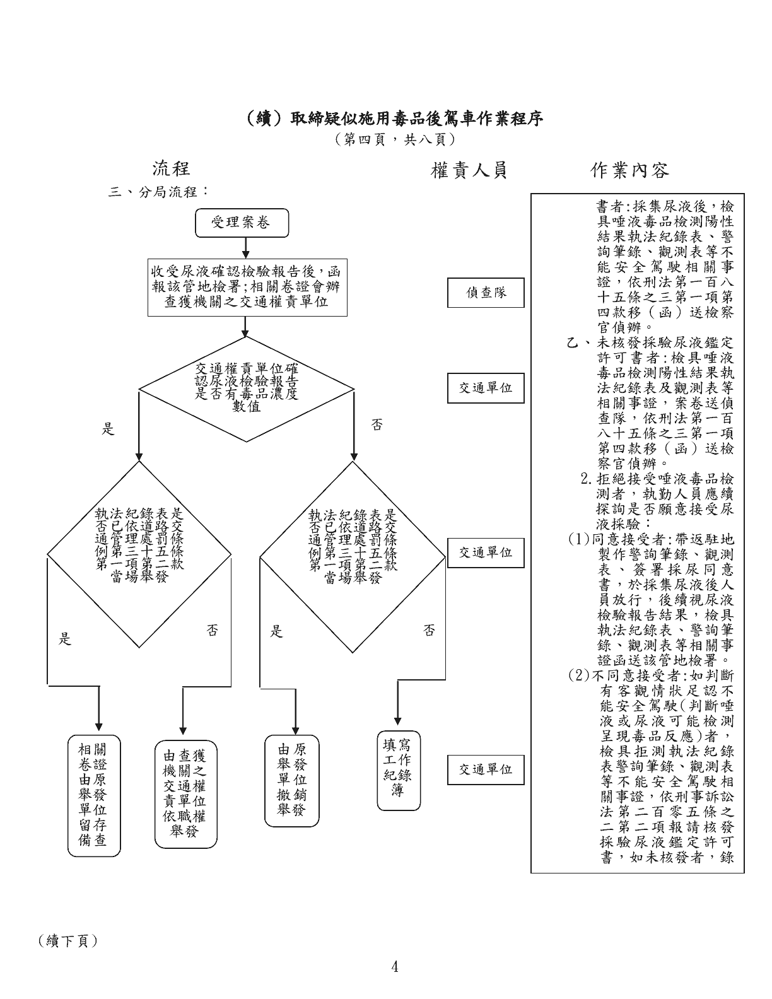
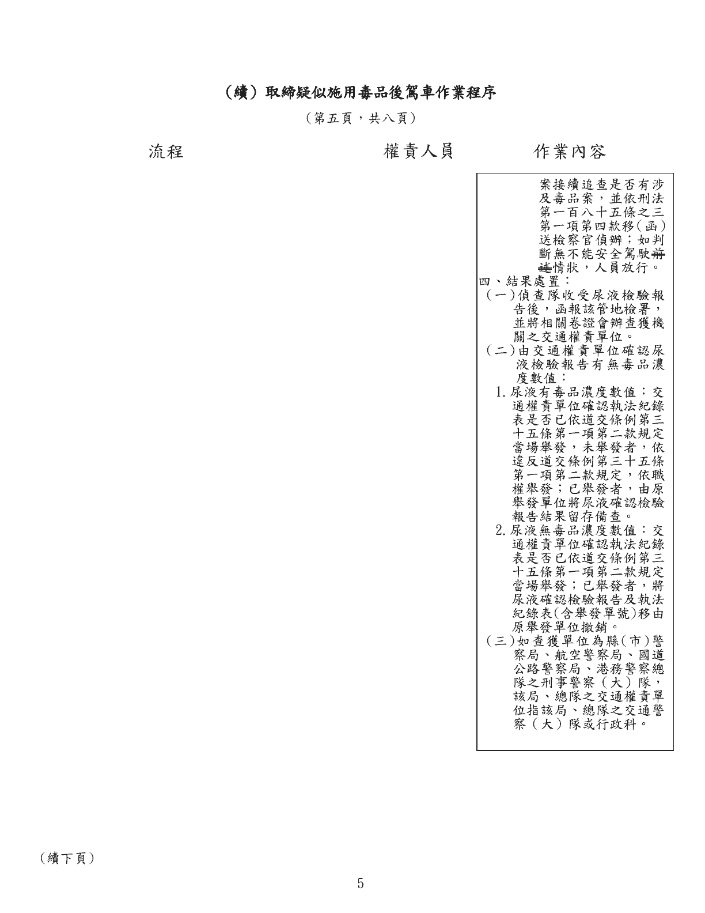
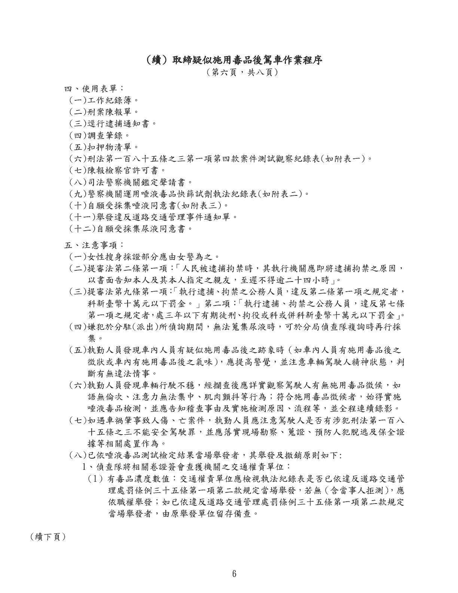
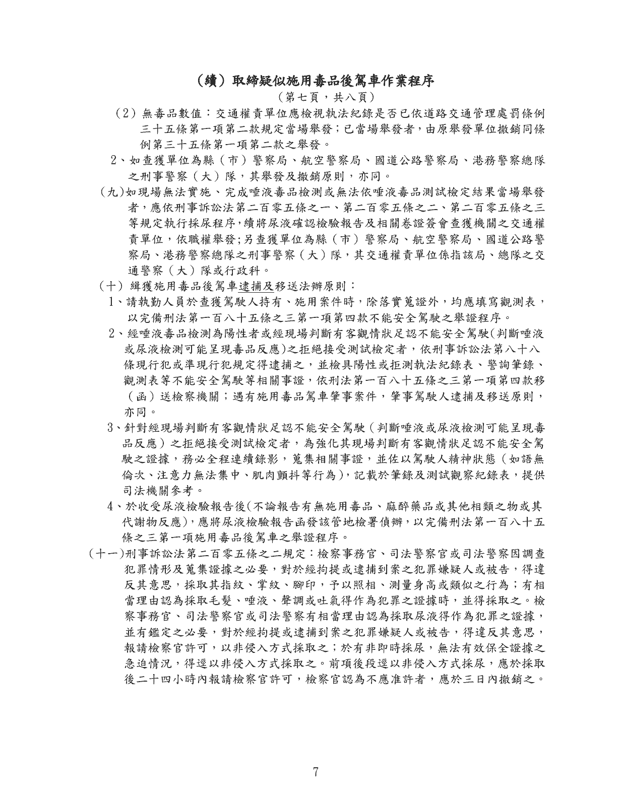
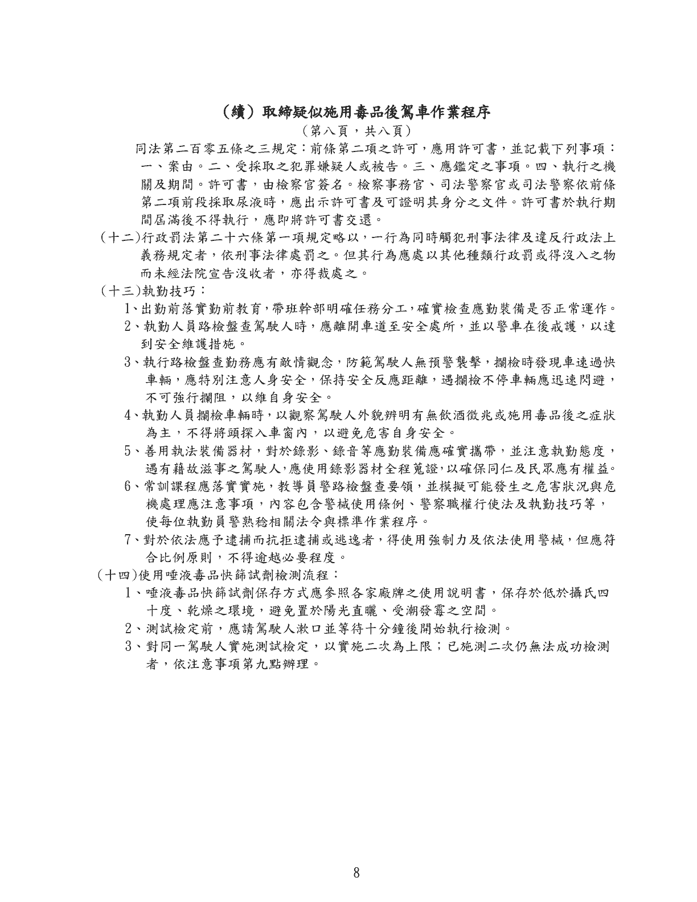
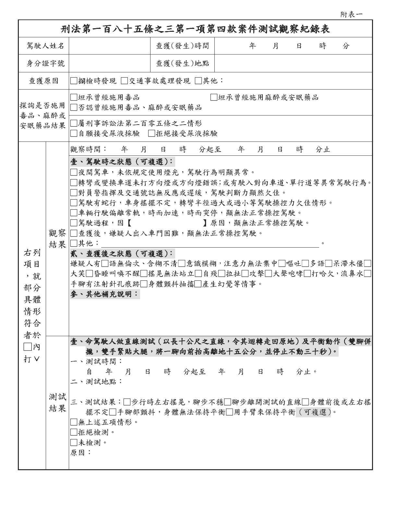
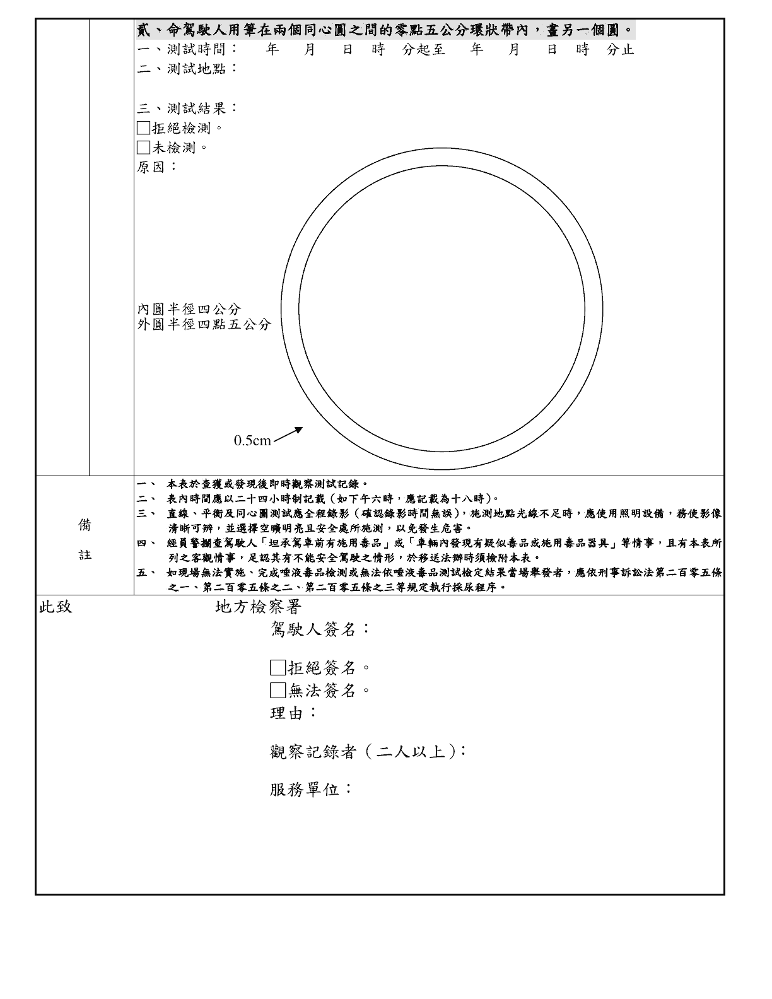
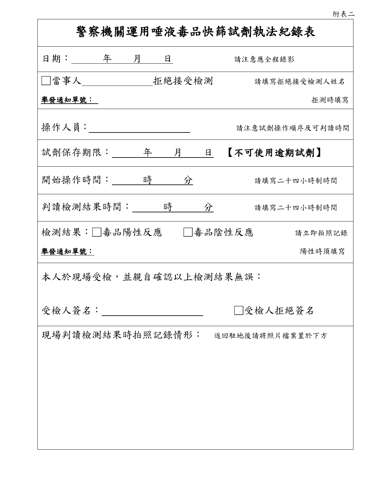
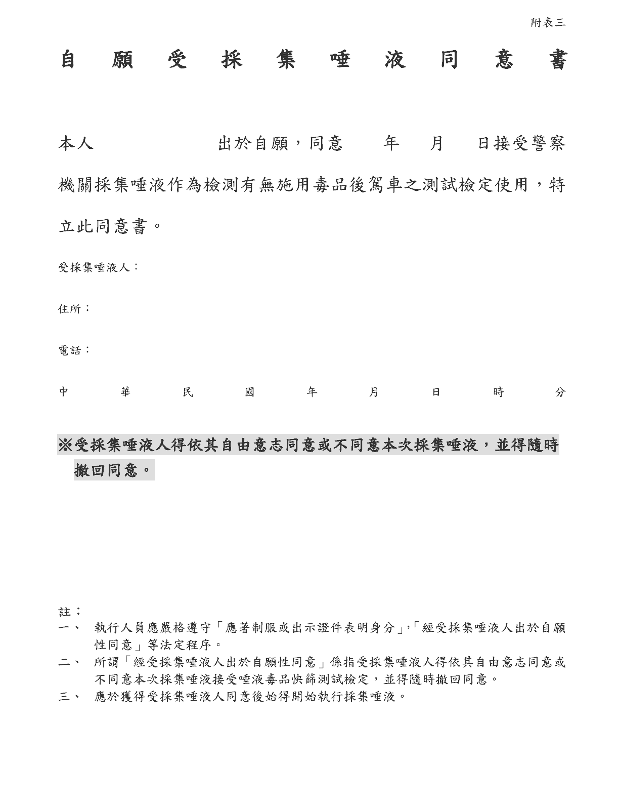
以下依現場作業順序將作業程序分段整理，每段標示原條次；條文以署頒正式版為準。
(一)警察職權行使法。
(二)道路交通管理處罰條例、違反道路交通管理事件統一裁罰基準及處理細則。
(三)中華民國刑法。
(四)刑事訴訟法。
(五)毒品危害防制條例及其施行細則、濫用藥物尿液檢驗作業準則。
(六)藥事法及管制藥品管理條例。
(七)行政罰法第二十六條。
(一)過濾、攔停車輛：員警執行勤務攔查車輛，或對於已發生危害或依客觀合理判斷易生危害之車輛進行攔查，並應符合比例原則。
(二)觀察與研判：
1.指揮車輛停止後，執勤人員應告知駕駛人，警方目前正在執行之勤務項目，如發現車內有疑似毒品或施用毒品器具情形，請駕駛人配合實施唾液毒品檢測、製作觀測表並配合同意採驗尿液；查獲毒品部分，依查處毒品案件作業程序辦理。
2.執勤人員應目視觀察車內有無疑似毒品或施用毒品器具，以及車內人員有無注意力不集中、情緒不穩、視聽幻覺或發抖等可能為施用毒品後產生之徵狀，如研判有疑似毒駕徵候，請駕駛人配合實施唾液毒品檢測、製作觀測表並配合同意採驗尿液。
3.如研判無疑似毒駕情形，探詢駕駛人是否於駕車前施用毒品；如有，請駕駛人配合實施唾液毒品檢測、製作觀測表並配合同意採驗尿液；如無，人、車放行。
4.車禍肇事案件：應注意是否為毒駕案件，並依「道路交通事故處理作業程序」A1 及 A2 類之規定，實施現場勘察及蒐證。遇客觀情狀足認有不能安全駕駛情形者，除依相關法令查處偵辦外，應落實現場蒐證、防止駕駛人逃逸，並請駕駛人配合實施唾液毒品檢測及尿液檢測；遇拒絕配合者，依刑事訴訟法第八十八條現行犯或準現行犯規定得逮捕之。
(五)執勤人員發現車內人員有疑似施用毒品後之跡象時（如車內人員有施用毒品後之徵狀或車內有施用毒品後之氣味），應提高警覺，並注意車輛駕駛人精神狀態，判斷有無違法情事。
(六)執勤人員發現車輛行駛不穩，經攔查後應詳實觀察駕駛人有無施用毒品徵候，如語無倫次、注意力無法集中、肌肉顫抖等行為；符合施用毒品徵候者，始得實施唾液毒品檢測，並應告知稽查事由及實施檢測原因、流程等，並全程連續錄影。
(七)如遇車禍肇事致人傷、亡案件，執勤人員應注意駕駛人是否有涉犯刑法第一百八十五條之三不能安全駕駛罪，並應落實現場勘察、蒐證、預防人犯脫逃及保全證據等相關處置作為。
(三)實施唾液毒品檢測：
1.執勤人員應全程錄影並告知駕駛人實施唾液毒品檢測事由、流程（產品有效期限、檢測流程、檢出結果判讀方式、有效判讀時間）並簽署唾篩同意書。
(十四)使用唾液毒品快篩試劑檢測流程：
1、唾液毒品快篩試劑保存方式應參照各家廠牌之使用說明書，保存於低於攝氏四十度、乾燥之環境，避免置於陽光直曬、受潮發霉之空間。
2、測試檢定前，應請駕駛人漱口並等待十分鐘後開始執行檢測。
3、對同一駕駛人實施測試檢定，以實施二次為上限；已施測二次仍無法成功檢測者，依注意事項第九點辦理。
※受採集唾液人得依其自由意志同意或不同意本次採集唾液，並得隨時撤回同意。
註：
一、執行人員應嚴格遵守「應著制服或出示證件表明身分」，「經受採集唾液人出於自願性同意」等法定程序。
二、所謂「經受採集唾液人出於自願性同意」係指受採集唾液人得依其自由意志同意或不同意本次採集唾液接受唾液毒品快篩測試檢定，並得隨時撤回同意。
三、應於獲得受採集唾液人同意後始得開始執行採集唾液。
(十) 緝獲施用毒品後駕車逮捕及移送法辦原則：
1、請執勤人員於查獲駕駛人持有、施用案件時，除落實蒐證外，均應填寫觀測表，以完備刑法第一百八十五條之三第一項第四款不能安全駕駛之舉證程序。
3、針對經現場判斷有客觀情狀足認不能安全駕駛（判斷唾液或尿液檢測可能呈現毒品反應）之拒絕接受測試檢定者，為強化其現場判斷有客觀情狀足認不能安全駕駛之證據，務必全程連續錄影，蒐集相關事證，並佐以駕駛人精神狀態（如語無倫次、注意力無法集中、肌肉顫抖等行為），記載於筆錄及測試觀察紀錄表，提供司法機關參考。
一、本表於查獲或發現後即時觀察測試記錄。
二、表內時間應以二十四小時制記載（如下午六時，應記載為十八時）。
三、直線、平衡及同心圖測試應全程錄影（確認錄影時間無誤），施測地點光線不足時，應使用照明設備，務使影像清晰可辨，並選擇空曠明亮且安全處所施測，以免發生危害。
四、經員警攔查駕駛人「坦承駕車前有施用毒品」或「車輛內發現有疑似毒品或施用毒品器具」等情事，且有本表所列之客觀情事，足認其有不能安全駕駛之情形，於移送法辦時須檢附本表。
五、如現場無法實施、完成唾液毒品檢測或無法依唾液毒品測試檢定結果當場舉發者，應依刑事訴訟法第二百零五條之一、第二百零五條之二、第二百零五條之三等規定執行採尿程序。
2.拒測: 勸導並告知拒絕檢測法律效果，駕駛人仍拒測者，請其於執法紀錄表拒絕接受檢測欄位簽名，另依道路交管理處罰條例（下稱道交條例）第三十五條當場舉發，並禁止其駕駛、移置保管車輛、吊銷其駕駛執照等處置；如判斷有客觀情狀足認不能安全駕駛(判斷唾液或尿液檢測可能呈現毒品反應)者，依刑事訴訟法第八十八條現行犯或準現行犯規定得逮捕之，並請其配合採驗尿液；如判斷無前述情狀，人員放行。
3.檢測結果:
(1)失敗:向受測者說明檢測失敗原因，請其配合重新實施檢測；如因唾液不足致無法實施檢測者，請其配合同意採集尿液，作為毒駕之測試檢定。
(2)陽性:告知檢測結果，請駕駛人於執法紀錄表確認簽名並依道路交通管理處罰條例第三十五條當場舉發，移置保管車輛、吊扣駕駛執照及車輛牌照，另依刑事訴訟法第八十八條現行犯或準現行犯規定得逮捕之，
(3)陰性: 告知檢測結果，人、車放行。
(九)如現場無法實施、完成唾液毒品檢測或無法依唾液毒品測試檢定結果當場舉發者，應依刑事訴訟法第二百零五條之一、第二百零五條之二、第二百零五條之三等規定執行採尿程序，續將尿液確認檢驗報告及相關卷證簽會查獲機關之交通權責單位，依職權舉發;另查獲單位為縣（市）警察局、航空警察局、國道公路警察局、港務警察總隊之刑事警察（大）隊，其交通權責單位係指該局、總隊之交通警察（大）隊或行政科。
2、經唾液毒品檢測為陽性者或經現場判斷有客觀情狀足認不能安全駕駛(判斷唾液或尿液檢測可能呈現毒品反應)之拒絕接受測試檢定者，依刑事訴訟法第八十八條現行犯或準現行犯規定得逮捕之，並檢具陽性或拒測執法紀錄表、警詢筆錄、觀測表等不能安全駕駛等相關事證，依刑法第一百八十五條之三第一項第四款移（函）送檢察機關；遇有施用毒品駕車肇事案件，肇事駕駛人逮捕及移送原則，亦同。
(四)實施尿液採驗：
1.唾液毒品檢測結果為陽性者，執勤人員應續探詢是否願意接受尿液採驗，並帶返駐地製作警詢筆錄、觀測表：
(1)同意接受尿液採驗:並檢具執法紀錄表、警詢筆錄及觀測表等不能安全駕駛相關事證，依刑法第一百八十五條之三第一項第四款移（函）送檢察官偵辦。
(2)不同意接受尿液採驗：執勤人員檢具陽性結果執法紀錄表等相關事證，依刑事訴訟法第二百零五條之二第二項報請檢察官核發採驗尿液鑑定許可書:
甲、核發採驗尿液鑑定許可書者:採集尿液後，檢具唾液毒品檢測陽性結果執法紀錄表、警詢筆錄、觀測表等不能安全駕駛相關事證，依刑法第一百八十五條之三第一項第四款移（函）送檢察官偵辦。
乙、未核發採驗尿液鑑定許可書者:檢具唾液毒品檢測陽性結果執法紀錄表及觀測表等相關事證，案卷送偵查隊，依刑法第一百八十五條之三第一項第四款移（函）送檢察官偵辦。
2.拒絕接受唾液毒品檢測者，執勤人員應續探詢是否願意接受尿液採驗：
(1)同意接受者:帶返駐地製作警詢筆錄、觀測表、簽署採尿同意書，於採集尿液後人員放行，後續視尿液檢驗報告結果，檢具執法紀錄表、警詢筆錄、觀測表等相關事證函送該管地檢署。
(2)不同意接受者:如判斷有客觀情狀足認不能安全駕駛(判斷唾液或尿液可能檢測呈現毒品反應)者，檢具拒測執法紀錄表警詢筆錄、觀測表等不能安全駕駛相關事證，依刑事訴訟法第二百零五條之二第二項報請核發採驗尿液鑑定許可書，如未核發者，錄案接續追查是否有涉及毒品案，並依刑法第一百八十五條之三第一項第四款移（函）送檢察官偵辦；如判斷無不能安全駕駛前述情狀，人員放行。
(十一)刑事訴訟法第二百零五條之二規定：檢察事務官、司法警察官或司法警察因調查犯罪情形及蒐集證據之必要，對於經拘提或逮捕到案之犯罪嫌疑人或被告，得違反其意思，採取其指紋、掌紋、腳印，予以照相、測量身高或類似之行為；有相當理由認為採取毛髮、唾液、聲調或吐氣得作為犯罪之證據時，並得採取之。檢察事務官、司法警察官或司法警察有相當理由認為採取尿液得作為犯罪之證據，並有鑑定之必要，對於經拘提或逮捕到案之犯罪嫌疑人或被告，得違反其意思，報請檢察官許可，以非侵入方式採取之；於有非即時採尿，無法有效保全證據之急迫情況，得逕以非侵入方式採取之。前項後段逕以非侵入方式採尿，應於採取後二十四小時內報請檢察官許可，檢察官認為不應准許者，應於三日內撤銷之。
同法第二百零五條之三規定：前條第二項之許可，應用許可書，並記載下列事項：一、案由。二、受採取之犯罪嫌疑人或被告。三、應鑑定之事項。四、執行之機關及期間。許可書，由檢察官簽名。檢察事務官、司法警察官或司法警察依前條第二項前段採取尿液時，應出示許可書及可證明其身分之文件。許可書於執行期間屆滿後不得執行，應即將許可書交還。
(一)女性搜身採證部分應由女警為之。
(二)提審法第二條第一項：「人民被逮捕拘禁時，其執行機關應即將逮捕拘禁之原因，以書面告知本人及其本人指定之親友，至遲不得逾二十四小時」。
(三)提審法第九條第一項：「執行逮捕、拘禁之公務人員，違反第二條第一項之規定者，科新臺幣十萬元以下罰金。」第二項：「執行逮捕、拘禁之公務人員，違反第七條第一項之規定者，處三年以下有期徒刑、拘役或科或併科新臺幣十萬元以下罰金」。
四、結果處置：
(一)偵查隊收受尿液檢驗報告後，函報該管地檢署，並將相關卷證會辦查獲機關之交通權責單位。
(二)由交通權責單位確認尿液檢驗報告有無毒品濃度數值：
1.尿液有毒品濃度數值：交通權責單位確認執法紀錄表是否已依道交條例第三十五條第一項第二款規定當場舉發，未舉發者，依違反道交條例第三十五條第一項第二款規定，依職權舉發；已舉發者，由原舉發單位將尿液確認檢驗報告結果留存備查。
2.尿液無毒品濃度數值：交通權責單位確認執法紀錄表是否已依道交條例第三十五條第一項第二款規定當場舉發；已舉發者，將尿液確認檢驗報告及執法紀錄表(含舉發單號)移由原舉發單位撤銷。
(三)如查獲單位為縣(市)警察局、航空警察局、國道公路警察局、港務警察總隊之刑事警察（大）隊，該局、總隊之交通權責單位指該局、總隊之交通警察（大）隊或行政科。
(八)已依唾液毒品測試檢定結果當場舉發者，其舉發及撤銷原則如下:
1、偵查隊將相關卷證簽會查獲機關之交通權責單位：
（1）有毒品濃度數值：交通權責單位應檢視執法紀錄表是否已依違反道路交通管理處罰條例三十五條第一項第二款規定當場舉發，若無（含當事人拒測），應依職權舉發；如已依違反道路交通管理處罰條例三十五條第一項第二款規定當場舉發者，由原舉發單位留存備查。
（2）無毒品數值：交通權責單位應檢視執法紀錄是否已依道路交通管理處罰條例三十五條第一項第二款規定當場舉發；已當場舉發者，由原舉發單位撤銷同條例第三十五條第一項第二款之舉發。
2、如查獲單位為縣（市）警察局、航空警察局、國道公路警察局、港務警察總隊之刑事警察（大）隊，其舉發及撤銷原則，亦同。
4、於收受尿液檢驗報告後(不論報告有無施用毒品、麻醉藥品或其他相類之物或其代謝物反應)，應將尿液檢驗報告函發該管地檢署偵辦，以完備刑法第一百八十五條之三第一項施用毒品後駕車之舉證程序。
(十二)行政罰法第二十六條第一項規定略以，一行為同時觸犯刑事法律及違反行政法上義務規定者，依刑事法律處罰之。但其行為應處以其他種類行政罰或得沒入之物而未經法院宣告沒收者，亦得裁處之。
(十三)執勤技巧：
1、出勤前落實勤前教育，帶班幹部明確任務分工，確實檢查應勤裝備是否正常運作。
2、執勤人員路檢盤查駕駛人時，應離開車道至安全處所，並以警車在後戒護，以達到安全維護措施。
3、執行路檢盤查勤務應有敵情觀念，防範駕駛人無預警襲擊，攔檢時發現車速過快車輛，應特別注意人身安全，保持安全反應距離，遇攔檢不停車輛應迅速閃避，不可強行攔阻，以維自身安全。
4、執勤人員攔檢車輛時，以觀察駕駛人外貌辨明有無飲酒徵兆或施用毒品後之症狀為主，不得將頭探入車窗內，以避免危害自身安全。
5、善用執法裝備器材，對於錄影、錄音等應勤裝備應確實攜帶，並注意執勤態度，遇有藉故滋事之駕駛人，應使用錄影器材全程蒐證，以確保同仁及民眾應有權益。
6、常訓課程應落實實施，教導員警路檢盤查要領，並模擬可能發生之危害狀況與危機處理應注意事項，內容包含警械使用條例、警察職權行使法及執勤技巧等，使每位執勤員警熟稔相關法令與標準作業程序。
7、對於依法應予逮捕而抗拒逮捕或逃逸者，得使用強制力及依法使用警械，但應符合比例原則，不得逾越必要程度。
這個分頁沒有符合的條文。
刑事訴訟法｜115.5.13 修正版本，節錄毒駕查處相關條文
鑑定人因鑑定之必要，得經審判長、受命法官或檢察官之許可，採取分泌物、排泄物、血液、毛髮或其他出自或附著身體之物，並得採取指紋、腳印、聲調、筆跡、照相或其他相類之行為。
前項處分，應於第二百零四條之一第二項許可書中載明。
檢察事務官、司法警察官或司法警察因調查犯罪情形及蒐集證據之必要，對於經拘提或逮捕到案之犯罪嫌疑人或被告，得違反其意思，採取其指紋、掌紋、腳印，予以照相、測量身高或類似之行為；有相當理由認為採取毛髮、唾液、聲調或吐氣得作為犯罪之證據時，並得採取之。
檢察事務官、司法警察官或司法警察有相當理由認為採取尿液得作為犯罪之證據，並有鑑定之必要，對於經拘提或逮捕到案之犯罪嫌疑人或被告，得違反其意思，報請檢察官許可，以非侵入方式採取之；於有非即時採尿，無法有效保全證據之急迫情況，得逕以非侵入方式採取之。
前項後段逕以非侵入方式採尿，應於採取後二十四小時內報請檢察官許可，檢察官認為不應准許者，應於三日內撤銷之。
前條第二項之許可，應用許可書，並記載下列事項：
一、案由。
二、受採取之犯罪嫌疑人或被告。
三、應鑑定之事項。
四、執行之機關及期間。
許可書，由檢察官簽名。
檢察事務官、司法警察官或司法警察依前條第二項前段採取尿液時，應出示許可書及可證明其身分之文件。
許可書於執行期間屆滿後不得執行，應即將許可書交還。
受採取人對於檢察事務官、司法警察官或司法警察依第二百零五條之二第二項後段所為之採取不服者，得向該管法院聲請撤銷之。
前項聲請期間為十日，自採取之日起算。法院不得以已執行終結而無實益為由駁回。
第四百零九條至第四百十四條、第四百十七條、第四百十八條第二項規定，於本條準用之。
對於第一項之裁定，不得抗告。
現行犯，不問何人得逕行逮捕之。
犯罪在實施中或實施後即時發覺者，為現行犯。
有左列情形之一者，以現行犯論：
一、被追呼為犯罪人者。
二、因持有兇器、贓物或其他物件，或於身體、衣服等處露有犯罪痕跡，顯可疑為犯罪人者。
執行拘提或逮捕，應當場告知被告或犯罪嫌疑人拘提或逮捕之原因及第九十五條第一項所列事項，並注意其身體及名譽。
前項情形，應以書面將拘提或逮捕之原因通知被告或犯罪嫌疑人及其指定之親友。
訊問被告應先告知下列事項：
一、犯罪嫌疑及所犯所有罪名。罪名經告知後，認為應變更者，應再告知。
二、得保持緘默，無須違背自己之意思而為陳述。
三、得選任辯護人。如為低收入戶、中低收入戶、原住民或其他依法令得請求法律扶助者，得請求之。
四、得請求調查有利之證據。
無辯護人之被告表示已選任辯護人時，應即停止訊問。但被告同意續行訊問者，不在此限。
被告或犯罪嫌疑人因身心障礙，致無法為完全之陳述，或具原住民身分，於偵查中未經選任辯護人，檢察官、司法警察官或司法警察應通知依法設立之法律扶助機構指派律師到場為其辯護。但經被告或犯罪嫌疑人主動請求立即訊問或詢問，或等候律師逾四小時未到場者，得逕行訊問或詢問。
司法警察官或司法警察詢問犯罪嫌疑人，不得於夜間行之。但有左列情形之一者，不在此限︰
一、經受詢問人明示同意者。
二、於夜間經拘提或逮捕到場而查驗其人有無錯誤者。
三、經檢察官或法官許可者。
四、有急迫之情形者。
犯罪嫌疑人請求立即詢問者，應即時為之。
稱夜間者，為日出前，日沒後。
檢察官、檢察事務官、司法警察官或司法警察逮捕被告、犯罪嫌疑人或執行拘提、羈押時，雖無搜索票，得逕行搜索其身體、隨身攜帶之物件、所使用之交通工具及其立即可觸及之處所。
搜索，經受搜索人出於自願性同意者，得不使用搜索票。但執行人員應出示證件，並將其同意之意旨記載於筆錄。
搜索婦女之身體，應命婦女行之。但不能由婦女行之者，不在此限。
經搜索而未發見應扣押之物者，應付與證明書於受搜索人。
可為證據或得沒收之物，得扣押之。
扣押，應制作收據，詳記扣押物之名目，付與所有人、持有人或保管人。
扣押物，應加封緘或其他標識，由扣押之機關或公務員蓋印。
這個分頁沒有符合的條文。
道路交通管理處罰條例｜115.8.17 修正公布；第21、21-1條，第35條第1～5、7～14項，第67、73、85-2條自 115.10.31 施行；第35條第6、15項自 115.12.31 施行
汽機車駕駛人，駕駛汽機車經測試檢定有下列情形之一，機車駕駛人處新臺幣一萬八千元以上十二萬元以下罰鍰，汽車駕駛人處新臺幣三萬六千元以上十五萬元以下罰鍰，並均當場移置保管該汽機車，第一款之情形並吊扣其駕駛執照一年至二年；附載未滿十二歲兒童或因而肇事致人受傷者，並吊扣其駕駛執照二年至四年；第二款之情形依罰鍰最高額處罰並吊銷其駕駛執照；致人重傷或死亡者，吊銷其駕駛執照，並不得再考領：
一、酒精濃度超過規定標準。
二、吸食毒品、迷幻藥、麻醉藥品或其相類似之管制藥品。
汽車駕駛人有前項應受吊扣情形時，駕駛營業大客車者，吊銷其駕駛執照；因而肇事且附載有未滿十二歲兒童之人者，按其吊扣駕駛執照期間加倍處分。
本條例中華民國一百零八年四月十七日修正公布條文施行之日起，汽機車駕駛人於十年內第二次違反第一項規定者，依其駕駛車輛分別依第一項所定罰鍰最高額處罰之，屬第二次違反第一項第二款規定者，按第一項所定罰鍰最高額加罰新臺幣九萬元。第三次以上者均按前次違反本項所處罰鍰金額加罰新臺幣九萬元，並均應當場移置保管該汽機車、吊銷其駕駛執照，公路主管機關得公布其姓名、照片及違法事實；如肇事致人重傷或死亡者，吊銷其駕駛執照，並不得再考領。
汽機車駕駛人有下列各款情形之一者，處新臺幣十八萬元罰鍰，屬拒絕接受第一項第二款稽查或測試檢定者，處新臺幣二十七萬元罰鍰，並均應當場移置保管該汽機車、吊銷其駕駛執照；如肇事致人重傷或死亡者，吊銷其駕駛執照，並不得再考領：
一、駕駛汽機車行經警察機關設有告示執行第一項測試檢定之處所，不依指示停車接受稽查。
二、拒絕接受第一項測試檢定。
三、接受第一項測試檢定前，吸食服用含酒精之物、毒品、迷幻藥、麻醉藥品或其相類似之管制藥品。
四、發生交通事故後，在接受第一項測試檢定前，吸食服用含酒精之物、毒品、迷幻藥、麻醉藥品或其相類似之管制藥品。
本條例中華民國一百零八年四月十七日修正公布條文施行之日起，汽機車駕駛人於十年內第二次違反前項規定者，處新臺幣三十六萬元罰鍰，屬拒絕接受第一項第二款稽查或測試檢定者，處新臺幣四十五萬元罰鍰，第三次以上者按前次違反本項所處罰鍰金額加罰新臺幣十八萬元，並均應當場移置保管該汽機車、吊銷其駕駛執照，公路主管機關得公布其姓名、照片及違法事實；如肇事致人重傷或死亡者，吊銷其駕駛執照，並不得再考領。
汽機車駕駛人駕車發生交通事故，涉犯刑法第一百八十五條之三第一項或陸海空軍刑法第五十四條第一項嫌疑，拒絕接受或發生交通事故無法實施第一項第一款測試檢定者，司法警察官或司法警察得報請檢察官核發鑑定許可書，將其強制移由受委託醫療或檢驗機構對其實施血液檢體採樣及酒精濃度測試檢定（以下簡稱血液測試檢定）；有相當理由認為情況急迫時，司法警察官或司法警察得將其先行移由醫療或檢驗機構實施血液測試檢定，並應於實施後二十四小時內陳報該管檢察官許可，檢察官認為不應許可者，應於三日內撤銷之，受血液測試檢定者得於受血液測試檢定後十日內，聲請該管法院撤銷之。
汽機車所有人，明知汽機車駕駛人有第一項各款情形，而不予禁止駕駛者，依第一項規定之罰鍰處罰。
汽機車駕駛人，駕駛汽機車經測試檢定有下列情形之一，年滿十八歲之同車乘客處新臺幣六千元以上一萬五千元以下罰鍰。但年滿七十歲、心智障礙或汽車運輸業之乘客，不在此限：
一、吐氣所含酒精濃度達每公升零點二五毫克或血液中酒精濃度達百分之零點零五以上。
二、吸食毒品、迷幻藥、麻醉藥品或其相類似之管制藥品。
違反第一項、第三項至第五項之情形之一，吊扣該汽機車牌照二年，並於移置保管該汽機車時，扣繳其牌照；因而肇事致人重傷或死亡，沒入該車輛。其屬違反第一項第二款，或拒絕接受該款稽查或測試檢定者，亦沒入該車輛。
租賃車業者已盡告知本條處罰規定之義務，汽機車駕駛人仍駕駛汽機車違反第一項、第三項至第五項規定之一者，依其駕駛車輛分別依第一項、第三項至第五項所處罰鍰加罰二分之一。
吸食毒品、迷幻藥、麻醉藥品或其相類似之管制藥品者，經警察機關確認後，吊銷其駕駛執照。
Q1、關配合辦理道路交通管理處罰條例第35條第11項相關注意事項，一、二級施用部分，分局反應書類目前大部分都已經無紙化，所以是否有司法文書系統能取得書類資料？
ANS：過渡時期是以「書類」為依據去製單舉發，所以「有收到」再會辦，沒收到的不用刻意去查詢，目前是採逐日匯出資料方式將資料在署資訊室做交換，俟系統介接之後這些資料也會匯入系統舉發，所以交通警察端會去舉發。
Q2、處分書有送達現住地、戶籍地，要以哪一個為主？因為有可能例如：戶籍10/31送達、現住10/30送達，不知道要以哪份處分書為憑。
ANS：先送現住、再送戶藉，現住地如為合法送達，即此送達就開始生效，故以先送達者為主。
Q3:針對在監在所的受處分人，如果戶籍地10/30寄存送達，現住地10/31由監所人員送達並由本人親簽，也是以先送達的10/30這份嗎？
ANS:應以監所合法送達之日為準。依行政程序法第89條規定，對於在監所人為送達者，應囑託該監所長官為之。因此，受處分人於行政處分書送達時已在監所者，縱先向其戶籍地辦理寄存送達，原則上尚不生合法送達效力；嗣由監所依法送達並由本人收受者，應以該次合法送達日期為送達日。例如戶籍地於10月30日辦理寄存送達，受處分人於10月31日經監所送達並親自簽收，應以10月31日為送達日。
Q4:「接獲」第三、四級處分書應於何時會辦?
ANS:因各警察機關之送達方式不同，為避免漏案與掌握時效，如由刑大統一採郵務送達者，請刑大於發文時會辦交通單位；如由分局送達者，請由查獲分局於接到處分書副本時，會辦交通單位，並於收到送達證書回執聯時再通知交通單位。
Q5、【系統介接資料】如有發現屬「無移送機關」之資料，如何處理?
ANS:本項屬交通舉發權責分工事宜，本局係配合署交通組規劃分工進行資料分派，相關舉發權責事宜請交通單位洽詢署交通組。
Q6、【系統介接資料】如「多筆偵查文書（處分書）」資料，如何處理?
ANS:有關舉發次數、施用事實等認定，本局與署交通組經多次討論，過渡期間以紙本進行舉發之舉發次數、施用事實等認定應與系統正式上線之認定標準相同，因涉及交通執法專業之權責，請交通單位洽詢署交通組，。
Q7、請問戒治滿不起訴，這種要吊銷駕照嗎？
ANS：
（1）第35條第11項「吸食毒品、迷幻藥、麻醉藥品或其相類似之管制藥品者，經警察機關確認後，吊銷其駕駛執照。」，係指經確認有施用毒品、迷幻藥、麻醉藥品或其相類似之管制藥品之情事、與是否被起訴、不起訴、緩起訴非為接相關。
（2）警政署自115年10月31日起即將符合舉發要件之清單上傳至署資訊室FTP，建議請交通單位參據清單，比對紙本書類進行舉發，可減少以書類之不明確之處。
汽機車駕駛人於依違反第一項第二款規定，吊銷駕駛執照期間，仍駕駛非屬本人之汽機車違反第一項第二款規定者，依其駕駛車輛分別依第一項或第三項所處罰鍰加罰二分之一。
汽機車駕駛人有第一項、第三項至第五項之情形之一，同時違反刑事法律者，經移置保管汽機車之領回，不受第八十五條之二第二項，應同時檢附繳納罰鍰收據之限制。
前項汽機車駕駛人，經裁判確定處以罰金低於第九十二條第四項所定最低罰鍰基準規定者，應依本條例裁決繳納不足最低罰鍰之部分。
第六項血液測試檢定結果之蒐集、處理或利用，應依個人資料保護法相關規定辦理，並僅得作為執法利用；有關血液採集、測試檢定、保存、銷毀、安全維護措施等程序、方法、數量、期限及其他相關事項之辦法，由內政部會商衛生福利部、法務部及交通部定之。
35-8 同車乘客單（駕籍地監理站；無駕照者戶籍地）：處理細則第25條第1項第2款明文將「乘客」列為移送駕籍地（未領駕照者依第3款送戶籍地）；同條第2項第5款改送行為地之對象僅限「汽車駕駛人」違反第35條，不包含同車乘客。
35-9／21-3後段／21-1-3後段沒入車主單（行為地監理站）：依同細則第25條第2項第6款，凡涉「應沒入車輛」規定者，為利管轄處罰機關就近執行車輛拍賣、銷毀，改由行為地處罰機關處理。
35-7 車主明知仍交車（車籍地監理站）：處車主罰鍰（依第35條第1項罰鍰），非沒入車輛，不適用第25條第2項第6款，依同細則第25條第1項第1款維持車籍地。
無照駕駛人單：未領有駕照者依第1項第3款送戶籍地；駕照吊銷／註銷／吊扣期間駕車者依第1項第2款送駕籍地（推論，待確認）；無法查明戶籍或居留地者依第2項第3款送行為地。
慢車駕駛人，駕駛慢車經測試檢定酒精濃度超過規定標準，或吸食毒品、迷幻藥、麻醉藥品及其相類似之管制藥品者，處新臺幣二千四百元以上一萬二千元以下罰鍰，並當場禁止其駕駛；駕駛微型電動二輪車者，並當場移置保管該微型電動二輪車。
慢車駕駛人有下列各款情形之一者，處新臺幣二萬四千元罰鍰，並當場禁止其駕駛；駕駛微型電動二輪車者，並當場移置保管該微型電動二輪車：
一、駕駛慢車行經警察機關設有告示執行前項測試檢定之處所，不依指示停車接受稽查。
二、拒絕接受前項測試檢定。
三、接受前項測試檢定前，吸食服用含酒精之物、毒品、迷幻藥、麻醉藥品或其相類似之管制藥品。
四、發生交通事故後，在接受前項測試檢定前，吸食服用含酒精之物、毒品、迷幻藥、麻醉藥品或其相類似之管制藥品。
汽機車駕駛人有下列第一款至第五款情形之一者，機車駕駛人處新臺幣一萬八千元以上三萬六千元以下罰鍰，汽車駕駛人處新臺幣三萬六千元以上六萬元以下罰鍰，第六款至第九款情形之一者，處新臺幣六千元以上一萬二千元以下罰鍰，並均當場移置保管該汽機車：
一、未領有駕駛執照駕駛小型車或機車。
二、領有機車駕駛執照，駕駛小型車。
三、使用偽造、變造或矇領之駕駛執照駕駛小型車或機車。
四、駕駛執照業經吊銷、註銷仍駕駛小型車或機車。
五、駕駛執照吊扣期間駕駛小型車或機車。
六、領有學習駕駛證，而無領有駕駛執照之駕駛人在旁指導，在駕駛學習場外學習駕車。
七、領有學習駕駛證，在駕駛學習場外未經許可之學習駕駛道路或規定時間駕車。
八、未領有駕駛執照，以教導他人學習駕車為業。
九、其他未依駕駛執照之持照條件規定駕車。
本條例中華民國一百十四年十月二十八日修正公布條文施行之日起，汽機車駕駛人於十年內第二次違反前項第一款至第五款規定者依前項所定罰鍰最高額處罰，第三次以上者按前次違反本項所處罰鍰金額加罰新臺幣一萬二千元；十年內第二次違反前項第六款至第九款規定者，處新臺幣二萬四千元罰鍰，第三次以上者按前次違反本項所處罰鍰金額加罰新臺幣六千元，並均當場移置保管該汽機車；如肇事致人重傷或死亡，沒入該汽機車。
汽機車駕駛人於依第三十五條第一項至第五項吊扣或吊銷駕駛執照期間，違反第一項第一款至第五款規定者，按第一項或第二項所處罰鍰加罰新臺幣一萬二千元罰鍰；其屬違反第三十五條第一項第二款、拒絕接受該款稽查或測試檢定，或違反同條第十一項吊銷駕駛執照期間，違反第一項第一款至第五款規定者，按第一項或第二項所處罰鍰加罰新臺幣三萬六千元罰鍰，並沒入該汽機車。
第一項第九款駕駛執照之持照條件規定，由交通部定之。
汽機車駕駛人違反第一項第一款至第五款規定者，除依第一項及第二項規定處罰外，應吊扣其駕駛執照一年至二年；因而肇事致人受傷者，吊扣其駕駛執照二年至四年；致人重傷或死亡者，吊銷其駕駛執照，並不得再考領；第一項第三款及第四款之駕駛執照，均應扣繳之；第五款並吊銷其駕駛執照。
違反第一項第一款至第五款之情形之一，使用之汽機車於移置保管該汽機車時，扣繳其牌照，並吊扣該汽機車牌照三個月；十年內違反二次者，吊扣該汽機車牌照六個月；十年內違反三次以上者，吊扣該汽機車牌照一年。
違反第一項第一款至第五款之情形之一，非汽機車駕駛人之所有人依第一項及第二項規定處罰鍰。
十四歲以上未成年之人，違反第一項第一款或第三款規定者，交通勤務警察或依法令執行交通稽查任務人員應將違規事實以書面或其他方式通知其法定代理人或監護人。
汽機車所有人已善盡查證駕駛人駕駛執照資格之注意，或縱加以相當注意而仍不免發生違規者，汽機車所有人不受本條之處罰。
汽車駕駛人駕駛聯結車、大客車或大貨車有下列情形之一者，汽車所有人及駕駛人各處新臺幣四萬元以上八萬元以下罰鍰，並當場移置保管該汽車：
一、未領有駕駛執照駕車。
二、領有機車駕駛執照駕車。
三、領有小型車駕駛執照駕車。
四、領有大貨車駕駛執照，駕駛大客車、聯結車或持大客車駕駛執照，駕駛聯結車。
五、駕駛執照業經吊銷、註銷仍駕車。
六、使用偽造、變造或矇領之駕駛執照駕車。
七、駕駛執照吊扣期間駕車。
本條例中華民國一百十四年十月二十八日修正公布條文施行之日起，汽車駕駛人於十年內第二次違反前項規定者，依前項所定罰鍰最高額處罰，第三次以上者按前次違反本項所處罰鍰金額加罰新臺幣二萬四千元，並均當場移置保管該汽車；如肇事致人重傷或死亡，沒入該汽車。
汽車駕駛人於依第三十五條第一項至第五項吊扣或吊銷駕駛執照期間，違反第一項第一款至第五款規定者，按第一項或第二項所處罰鍰加罰新臺幣四萬元罰鍰；其屬違反第三十五條第一項第二款、拒絕接受該款稽查或測試檢定，或違反同條第十一項吊銷駕駛執照期間，違反第一項第一款至第五款規定者，按第一項或第二項所處罰鍰加罰新臺幣八萬元罰鍰，並沒入該汽車。
第一項及第二項駕駛人應吊扣其駕駛執照一年至二年；因而肇事致人受傷者，並吊扣其駕駛執照二年至四年；致人重傷或死亡者，吊銷其駕駛執照，並不得再考領；第一項第五款或第六款之駕駛執照，均應扣繳之；第七款並吊銷其駕駛執照。
違反第一項情形使用之汽車，於移置保管該汽車時，扣繳其牌照，並吊扣該汽車牌照三個月；十年內違反二次者，吊扣該汽車牌照六個月；十年內違反三次以上者，吊扣該汽車牌照一年。
汽車所有人已善盡查證駕駛人駕駛執照資格之注意，或縱加以相當之注意而仍不免發生違規者，汽車所有人不受本條之處罰。
依本條例規定逕行舉發或同時併處罰其他人之案件，推定受逕行舉發人或該其他人有過失。
汽車駕駛人有下列情形之一，因而致人受傷或死亡，依法應負刑事責任者，得加重其刑至二分之一：
一、未領有駕駛執照駕車。
二、駕駛執照經吊銷、註銷或吊扣期間駕車。
三、酒醉駕車。
四、吸食毒品、迷幻藥、麻醉藥品或其相類似之管制藥品駕車。
五、行駛人行道、行近行人穿越道或其他依法可供行人穿越之交岔路口不依規定讓行人優先通行。
六、行經設有學校、醫院標誌之路段，不減速慢行。
七、行車速度，超過規定之最高時速四十公里以上。
八、任意以迫近、驟然變換車道或其他不當方式，迫使他車讓道。
九、非遇突發狀況，在行駛途中任意驟然減速、煞車或於車道中暫停。
十、二輛以上之汽車在道路上競駛、競技。
十一、連續闖紅燈併有超速行為。
車輛所有人或駕駛人依本條例規定應予禁止通行、禁止其行駛、禁止其駕駛者，交通勤務警察或依法令執行交通稽查任務人員應當場執行之，必要時，得逕行移置保管其車輛。
前項車輛所有人或其委託之第三人得於保管原因消失後，持保管收據及行車執照領回車輛。其違反本條例第三十五條、第七十三條第二項、第三項規定者，應同時檢附繳納罰鍰收據。但初次違反規定且未發生交通事故者，得檢附分期繳納罰鍰收據領回車輛。
依第三十五條、第七十三條第二項、第三項規定被逕行移置保管之車輛屬租賃車業者之車輛，得由車輛所有人檢具租賃契約書、違規駕駛人姓名、住址並具結後，據以取回被移置保管車輛。
違反本條例之行為，自行為成立之日起；行為有連續或繼續之狀態者，自行為終了之日起，逾二個月不得舉發。但有下列情形，其起算日或舉發期限依各款規定辦理：
一、車輛駕駛人經移由受委託醫療或檢驗機構對其依第三十五條第一項第二款、第七十三條第二項測試檢定者，其期間自檢驗報告結果通知警察機關之日起算。
二、汽車肇事致人受傷或死亡案件，因肇事責任不明，已送鑑定者，其期間自鑑定終結之日起算；未送鑑定而須分析研判者，逾三個月不得舉發。
汽車駕駛人曾依第二十一條第五項前段、第二十一條之一第四項前段、第二十七條第三項、第二十九條之二第五項、第三十五條第一項後段、第三項後段、第四項後段、第五項後段、第五十四條、第六十一條第一項第一款、第二款、第六十二條第四項後段規定吊銷駕駛執照者，終身不得考領駕駛執照。但有第六十七條之一所定情形者，除違反第三十五條第一項後段、第三項後段、第四項後段、第五項後段者外，不在此限。
汽車駕駛人曾依第二十一條第五項後段、第二十一條之一第四項後段、第三十五條第十一項規定吊銷駕駛執照者，二年內不得考領駕駛執照；曾依第二十九條第四項、第三十條第三項、第三十條之一第二項、第三十五條第一項前段、第三項前段、第四項前段、第四十三條第二項、第三項、第四十四條第四項、第四十五條第三項、第六十一條第一項第三款、第四款、第四項、第六十二條第四項前段規定吊銷駕駛執照者，三年內不得考領駕駛執照；汽車駕駛人駕駛營業大客車，曾依第三十五條第二項規定或汽車駕駛人曾因肇事致人重傷依第四十四條第四項規定吊銷駕駛執照者，四年內不得考領駕駛執照；依第三十五條第五項前段規定或曾因肇事致人死亡依第四十四條第四項規定吊銷駕駛執照者，五年內不得考領駕駛執照。
汽車駕駛人曾依本條例其他各條規定吊銷駕駛執照者，一年內不得考領駕駛執照。
汽車駕駛人曾依第二項及前項規定吊銷駕駛執照，不得考領駕駛執照期間計達六年以上者，終身不得考領駕駛執照。但有第六十七條之一所定情形者，除違反第三十五條第一項前段、第三項前段、第四項前段、第五項前段、第十一項者外，不在此限。
汽車駕駛人曾依第三十五條規定吊銷駕駛執照，未依規定完成酒駕防制教育、酒癮治療、毒駕防制教育、觀察勒戒、強制戒治、毒品戒癮治療或毒品危害講習，不得考領駕駛執照。有第三十五條第一項第二款或第十一項情形之一者，經依規定重新申請考驗合格後，應於一年內無再次違反時，始發給駕駛執照。
前項酒駕防制教育、毒駕防制教育或酒癮治療、毒品戒癮治療、毒品危害講習之實施對象、教育或治療實施機構、方式、費用收取、完成之認定基準及其他相關事項之辦法，由交通部會商衛生福利部定之。
第一項至第四項不得考領駕駛執照規定，於汽車駕駛人未領有駕駛執照、駕駛執照經吊銷或註銷者，適用之。
汽車駕駛人違反本條例規定，應受吊扣駕駛執照處分，於汽車駕駛人未領有駕駛執照、駕駛執照經吊銷或註銷者，在所規定最長吊扣期間內，不得考領駕駛執照。
這個分頁沒有符合的條文。
中華民國刑法｜第185條之3（不能安全駕駛罪）
駕駛動力交通工具而有下列情形之一者，處三年以下有期徒刑，得併科三十萬元以下罰金：
一、吐氣所含酒精濃度達每公升零點二五毫克或血液中酒精濃度達百分之零點零五以上。
二、有前款以外之其他情事足認服用酒類或其他相類之物，致不能安全駕駛。
三、尿液或血液所含毒品、麻醉藥品或其他相類之物或其代謝物達行政院公告之品項及濃度值以上。
四、有前款以外之其他情事足認施用毒品、麻醉藥品或其他相類之物，致不能安全駕駛。
因而致人於死者，處三年以上十年以下有期徒刑，得併科二百萬元以下罰金；致重傷者，處一年以上七年以下有期徒刑，得併科一百萬元以下罰金。
曾犯本條或陸海空軍刑法第五十四條之罪，經有罪判決確定或經緩起訴處分確定，於十年內再犯第一項之罪因而致人於死者，處無期徒刑或五年以上有期徒刑，得併科三百萬元以下罰金；致重傷者，處三年以上十年以下有期徒刑，得併科二百萬元以下罰金。
這個分頁沒有符合的條文。
交通部函釋、行政罰法、提審法｜函釋內容引自警政署 115.9.1 交通執法教育訓練簡報
法規如有修正，以全國法規資料庫最新公布版本為準
有關駕駛人拒絕唾液快篩檢測，如經報請檢察官強制採取尿液檢驗後呈現陽性是否可再依道路交通管理處罰條例第 35 條第 1 項第 2 款舉發毒駕一節，依本部 102 年 8 月15 日交路字第 1020022543 號函檢送法務部 102 年 7 月 2日法律字第 10203505020 號函釋略以，汽車駕駛人拒絕接受測試檢定與酒後駕車二者違反行政法上義務並不相同，分屬數行為，應分別處罰，無一行為不二罰原則之適用，爰參考該函釋精神，毒駕亦適用之。
查行政罰法第24條規定，一行為違反數個行政法上義務規定而應處罰鍰者，依法定罰鍰額最高之規定裁處。但裁處之額度，不得低於各該規定之罰鍰最低額。爰酒後駕車同車乘客同時是車主部分，如同時違反處罰條例第35條第7項及第8項規定，依行政罰法第24條規定，應適用處罰條例第35條第7項規定從重處罰。
關於貴署函為駕駛人同時拒絕酒測及唾液毒品快篩試劑檢測該如何舉發一案，認駕駛人同時拒絕酒測及唾液毒品快篩試劑檢測，應依道路交通管理處罰條例第35條第4項第2款分別舉發（製單2張）之見解，應屬妥適。
引自警政署115年毒駕新制交通執法教育訓練簡報（原文照錄）
動力機械既係領用「牌證」行駛道路而無道路交通管理處罰例第35條第9項處罰所規範之「牌照」，自無牌照可供裁處吊扣。
引自警政署115年毒駕新制交通執法教育訓練簡報（原文照錄）
關於本部107年11月19日交路字第1070029957號函示道路交通管理處罰條例第12條第1項之當場移置保管規定允許汽車所有人或所委託之人得自行或委託拖吊業者將該車拖離一案，自即日起停止適用。
引自警政署115年毒駕新制交通執法教育訓練簡報（原文照錄）
一行為違反數個行政法上義務規定而應處罰鍰者，依法定罰鍰額最高之規定裁處。但裁處之額度，不得低於各該規定之罰鍰最低額。
前項違反行政法上義務行為，除應處罰鍰外，另有沒入或其他種類行政罰之處罰者，得依該規定併為裁處。但其處罰種類相同，如從一重處罰已足以達成行政目的者，不得重複裁處。
數行為違反同一或不同行政法上義務之規定者，分別處罰之。
一行為同時觸犯刑事法律及違反行政法上義務規定者，依刑事法律處罰之。但其行為應處以其他種類行政罰或得沒入之物而未經法院宣告沒收者，亦得裁處之。
人民被逮捕、拘禁時，逮捕、拘禁之機關應即將逮捕、拘禁之原因、時間、地點及得依本法聲請提審之意旨，以書面告知本人及其指定之親友，至遲不得逾二十四小時。
本人或其親友亦得請求為前項之告知。
本人或其親友不通曉國語者，第一項之書面應附記其所理解之語文；有不能附記之情形者，應另以其所理解之語文告知之。
這個分頁沒有符合的條文。
常見問題｜第35條第11項預防性吊照重點整理與問答
一、經警察機關確認施用毒品者，吊銷其駕駛執照，2年內不得考領；汽、機車駕照均吊銷（處理細則第19條之5、第70條）。
二、舉發法條：道路交通管理處罰條例第35條第11項。
三、應到案處所：駕籍地監理裁罰機關。
四、不以查有駕駛行為為前提；經確認並製單舉發後，由管轄處罰機關裁決吊銷駕駛執照。
系統介接完成（完成時程：115年11月底前）前，由刑事單位提供書面依據，會辦交通單位審核、製單舉發；介接完成後改由系統批次產檔、員警審核製單上傳。
一、第一、二級毒品：依檢察官書類（緩起訴處分書、觀察勒戒或強制戒治聲請書、簡易處刑聲請書、起訴書等）會辦。有收到再會辦，沒收到不必刻意查詢（見 Q1）。
二、第三、四級毒品：依警察局處分書會辦（不含單純持有純質淨重未達5公克案件）。
(一)由刑事警察（大）隊統一採郵務送達者：於發文時會辦交通單位。
(二)由分局送達者：查獲分局於接到處分書副本時會辦交通單位，並於收到送達證書回執聯時再通知交通單位（見 Q4）。
三、其他司法警察機關（如刑事局、保三、保七）查獲施用一、二級毒品案件：將檢察官書類提供移送機關所在地之直轄市、縣（市）政府警察局，俾憑製單舉發。
問：關配合辦理道路交通管理處罰條例第35條第11項相關注意事項，一、二級施用部分，分局反應書類目前大部分都已經無紙化，所以是否有司法文書系統能取得書類資料？
答：過渡時期是以「書類」為依據去製單舉發，所以「有收到」再會辦，沒收到的不用刻意去查詢，目前是採逐日匯出資料方式將資料在署資訊室做交換，俟系統介接之後這些資料也會匯入系統舉發，所以交通警察端會去舉發。
問：處分書有送達現住地、戶籍地，要以哪一個為主？因為有可能例如：戶籍10/31送達、現住10/30送達，不知道要以哪份處分書為憑。
答：先送現住、再送戶藉，現住地如為合法送達，即此送達就開始生效，故以先送達者為主。
問：針對在監在所的受處分人，如果戶籍地10/30寄存送達，現住地10/31由監所人員送達並由本人親簽，也是以先送達的10/30這份嗎？
答：應以監所合法送達之日為準。依行政程序法第89條規定，對於在監所人為送達者，應囑託該監所長官為之。因此，受處分人於行政處分書送達時已在監所者，縱先向其戶籍地辦理寄存送達，原則上尚不生合法送達效力；嗣由監所依法送達並由本人收受者，應以該次合法送達日期為送達日。例如戶籍地於10月30日辦理寄存送達，受處分人於10月31日經監所送達並親自簽收，應以10月31日為送達日。
問：「接獲」第三、四級處分書應於何時會辦?
答：因各警察機關之送達方式不同，為避免漏案與掌握時效，如由刑大統一採郵務送達者，請刑大於發文時會辦交通單位；如由分局送達者，請由查獲分局於接到處分書副本時，會辦交通單位，並於收到送達證書回執聯時再通知交通單位。
問：【系統介接資料】如有發現屬「無移送機關」之資料，如何處理?
答：本項屬交通舉發權責分工事宜，本局係配合署交通組規劃分工進行資料分派，相關舉發權責事宜請交通單位洽詢署交通組。
問：【系統介接資料】如「多筆偵查文書（處分書）」資料，如何處理?
答：有關舉發次數、施用事實等認定，本局與署交通組經多次討論，過渡期間以紙本進行舉發之舉發次數、施用事實等認定應與系統正式上線之認定標準相同，因涉及交通執法專業之權責，請交通單位洽詢署交通組，。
問：請問戒治滿不起訴，這種要吊銷駕照嗎？
答：
（1）第35條第11項「吸食毒品、迷幻藥、麻醉藥品或其相類似之管制藥品者，經警察機關確認後，吊銷其駕駛執照。」，係指經確認有施用毒品、迷幻藥、麻醉藥品或其相類似之管制藥品之情事、與是否被起訴、不起訴、緩起訴非為接相關。
（2）警政署自115年10月31日起即將符合舉發要件之清單上傳至署資訊室FTP，建議請交通單位參據清單，比對紙本書類進行舉發，可減少以書類之不明確之處。
這個分頁沒有符合的條文。
本工具提供第一線外勤同仁查處毒駕時現場參考；實際處置以最新法令與規定為準。使用時發現錯誤，或法規、程序有誤，請與製作人聯繫。
紅框、紅字、標籤與小標為本彙編自加標示，非條文內容。法規如有修正，以全國法規資料庫最新公布版本為準。整理日期：115.11.19。
| 現場人車情境 | 應製單張數 | 【駕駛人】舉發單填寫 | 【車主】舉發單填寫 | 【同車乘客】舉發單 （35條8項） |
|---|---|---|---|---|
| 【甲】駕駛人 同為車主 （分別製單） |
陽性：駕駛1＋車主1 ＋乘客N 拒測：駕駛1＋車主1 |
•陽性法條：35條1項2款 •拒測法條：35條4項2款 •代保管：無 •應到案處：行為地監理站 |
•法條：35條9項（陽性／拒測皆開） •代保管：空車乙部 •應到案處：行為地監理站 |
•陽性案件：滿 18 歲乘客（排除未成年、70 歲以上、心障、運輸業）每人各開 1 張 35條8項 •代保管無 •應到案處：駕籍地監理站（無駕照者戶籍地）
•拒測當下不開（須抄登乘客資料備查）。
|
| 【乙】駕駛非車主 (車主同車在場) |
陽性：駕駛1＋車主2 ＋車主以外乘客N 拒測：駕駛1＋車主1 |
•陽性加開 35條7項：處罰明知仍交車（拒測當下不開） •35條9項：空車乙部 •應到案處：35-7 車籍地、35-9 行為地 |
||
| 【丙】駕駛非車主 (車主不在場) |
陽性：駕駛1＋車主1 ＋乘客N 拒測：駕駛1＋車主1 |
•法條：35條9項（陽性／拒測皆開，免開 35-7） •代保管：空車乙部 •應到案處：行為地監理站（駕駛代簽／郵寄 45日） |
||
| 駕駛無照（加開） 甲乙丙皆可能 |
甲：駕駛1＋車主1／乙丙：駕駛1＋車主2（21-6、21-7分開） （乘客不另開） |
•【駕駛人】21條1項○款（大型車 21條之1第1項○款；毒駕類吊銷期間加第3項）｜代保管：（應扣繳駕照者填駕照乙張）｜應到案處：未領照者戶籍地、吊銷期間駕籍地監理站 •【車主】21條6項（非車主駕駛加7項；大型車 21條之1第5項）｜代保管：已開 35-9 者填無並註明「併 PYOC＿＿（扣車單號）」，保管單僅填 1 份；未開 35-9 者填空車乙部、牌照N面｜應到案處：車籍地監理站（沒入者行為地） |
||